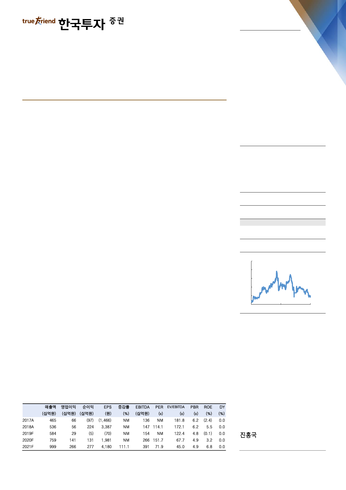

기업 Note
2019. 6. 4
삼성바이오로직스(207940)
지금 주가는 막연한 두려움이 충분히 반영된 수준
매수(유지)
목표주가: 400,000원(유지)
분식회계로 판결나더라도 펀더멘털에 미치는 영향은 제한적
분식회계에 대한 검찰조사가 장기화되고 있는 가운데, 삼성바이오로직스에 법적으
로 불리하게 작용할 수 있는 정황들이 속속 발견되고 일부 임직원이 구속되는 등
다양한 악재가 발생했다. 삼성바이오로직스의 주가도 올 한 해 22% 하락했다. 그
러나 분식회계로 판나더라도 회사의 펀더멘털에 미치는 영향은 제한적이다. 회사
는 이미 지난해 말 추징금 80억원을 납부했으며 앞으로 있을 수 있는 처분은 과거
재무제표 재작성, 외부감사인 지정, 대표이사의 해임으로 영업에 직접적으로 미치
는 악영향은 그리 크지 않을 것으로 전망되기 때문이다.
신규수주는 늘고 있고 실적은 3분기부터 턴어라운드
최근 신규수주가 발생하기 시작하면서 법적공방에 따른 영업위축 우려는 완화되고
있다. 회사는 2019년 4월에서 5월 두 달간 약 1,500억원의 신규수주를 체결했다.
향후 개발성공시 최소보장금액은 약 5천억원으로, 회사는 지속적인 신규수주를 통
해 장기성장동력을 확보해 나가고 있다. 한편 정기보수를 마치고 1공장과 2공장의
가동이 본격화되면서 실적은 2분기 영업적자 시현 후 3분기부터는 흑자전환할 것
으로 예상한다. 4분기부터는 3공장 매출이 발생하기 시작하면서 실적개선이 본격
화될 것이다. 영업 측면에서도 회사는 바닥을 통과하고 있다.
현 주가는 상장폐지에 대한 공포감이 극에 달했던 지난 11월 수준
현 주가는 상장폐지에 대한 공포감이 극에 달했던 2018년 11월 수준이다. 이후
거래가 재개되며 주가는 반등했으나 1분기 영업적자와 함께 검찰조사 과정에서 막
연한 공포감이 조성됐고 주가는 다시 전저점 수준으로 하락했다. 실적은 하반기부
터 개선되고 최악의 시나리오를 감안하더라도 남은 처분은 대표이사 해임권고 정
도다. 2분기에도 영업적자가 예상되나 이미 컨센서스(-123억원)에 반영되어 있
으며 하반기 실적개선이 유력하다. 따라서 현 시점에서 주가는 하락보다 상승할
가능성이 높다. 지금은 삼성바이오로직스에 대해 막연한 두려움을 넘어 매수관점
으로 접근해볼 만한 타이밍이다. 매수의견과 DCF로 산출한 목표주가 40만원을
유지한다.
Stock Data
KOSPI(6/3)
2,068
주가(6/3)
300,500
시가총액(십억원)
19,883
발행주식수(백만)
66
52주 최고/최저가(원)
546,000/283,500
일평균거래대금(6개월, 백만원)
56,124
유동주식비율/외국인지분율(%)
24.8/8.7
주요주주(%) 삼성물산 외 4 인
75.1
주가상승률
절대주가(%)
KOSPI 대비(%p)
1개월
(10.0)
(4.2)
6개월
(10.2)
(7.2)
12개월
(33.4)
(18.2)
주가추이
(천원)
700
600
500
400
300
200
Jun-17
자료: FnGuide
Jun-18
Jun-19
hg.jin@truefriend.com